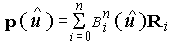
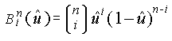
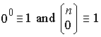
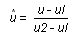

title: glMap1d function (Gl.h) description: The glMap1d function defines a one-dimensional evaluator. | glMap1d function (Gl.h) ms.assetid: 65f8b099-597c-4300-a7d1-3dabdd19e6cb keywords:
The glMap1d and glMap1f functions define a one-dimensional evaluator.
void WINAPI glMap1d(
GLenum target,
GLdouble u1,
GLdouble u2,
GLint stride,
GLint order,
const GLdouble *points
);
target
The kind of values that are generated by the evaluator. Symbolic constants. The target parameter is a symbolic constant that indicates what kind of control points are provided in points, and what output is generated when the map is evaluated. It can assume one of nine predefined values.
| Value | Meaning |
|---|---|
| GL_MAP1_VERTEX_3 | Each control point is three floating-point values representing x, y, and z. Internal glVertex3 commands are generated when the map is evaluated. |
| GL_MAP1_VERTEX_4 | Each control point is four floating-point values representing x, y, z, and w. Internal glVertex4 commands are generated when the map is evaluated. |
| GL_MAP1_INDEX | Each control point is a single floating-point value representing a color index. Internal glIndex commands are generated when the map is evaluated. However, the current index is not updated with the value of these glIndex commands. |
| GL_MAP1_COLOR_4 | Each control point is four floating-point values representing red, green, blue, and alpha. Internal glColor4 commands are generated when the map is evaluated. However, the current color is not updated with the value of these glColor4 commands. |
| GL_MAP1_NORMAL | Each control point is three floating-point values representing the x, y, and z components of a normal vector. Internal glNormal commands are generated when the map is evaluated. However, the current normal is not updated with the value of these glNormal commands. |
| GL_MAP1_TEXTURE_COORD_1 | Each control point is a single floating-point value representing the s texture coordinate. Internal glTexCoord1 commands are generated when the map is evaluated. However, the current texture coordinates are not updated with the value of these glTexCoord commands. |
| GL_MAP1_TEXTURE_COORD_2 | Each control point is two floating-point values representing the s and t texture coordinates. Internal glTexCoord2 commands are generated when the map is evaluated. However, the current texture coordinates are not updated with the value of these glTexCoord commands. |
| GL_MAP1_TEXTURE_COORD_3 | Each control point is three floating-point values representing the s, t, and r texture coordinates. Internal glTexCoord3 commands are generated when the map is evaluated. However, the current texture coordinates are not updated with the value of these glTexCoord commands. |
| GL_MAP1_TEXTURE_COORD_4 | Each control point is four floating-point values representing the s, t, r, and q texture coordinates. Internal glTexCoord4 commands are generated when the map is evaluated. However, the current texture coordinates are not updated with the value of these glTexCoord commands. |
u1
A linear mapping of u, as presented to glEvalCoord1, to u^, the variable that is evaluated by the equations specified by this command.
u2
A linear mapping of u, as presented to glEvalCoord1, to u^, the variable that is evaluated by the equations specified by this command.
stride
The number of floats or doubles between the beginning of one control point and the beginning of the next one in the data structure referenced in points. This allows control points to be embedded in arbitrary data structures. The only constraint is that the values for a particular control point must occupy contiguous memory locations.
order
The number of control points. Must be positive.
points
A pointer to the array of control points.
This function does not return a value.
The following error codes can be retrieved by the glGetError function.
| Name | Meaning |
|---|---|
| GL_INVALID_ENUM | target was not an accepted value. |
| GL_INVALID_VALUE | u1 was equal to u2. |
| GL_INVALID_VALUE | stride was less than the number of values in a control point. |
| GL_INVALID_VALUE | order was less than one or GL_MAX_EVAL_ORDER. |
| GL_INVALID_OPERATION | The function was called between a call to glBegin and the corresponding call to glEnd. |
Evaluators provide a way to use polynomial or rational polynomial mapping to produce vertices, normals, texture coordinates, and colors. The values produced by an evaluator are sent to further stages of OpenGL processing just as if they had been presented using glVertex, glNormal, glTexCoord, and glColor commands, except that the generated values do not update the current normal, texture coordinates, or color.
All polynomial or rational polynomial splines of any degree (up to the maximum degree supported by the OpenGL implementation) can be described using evaluators. These include almost all splines used in computer graphics, including B-splines, Bezier curves, Hermite splines, and so on.
Evaluators define curves based on Bernstein polynomials. Define p () as

where Ri is a control point and () is the i the Bernstein polynomial of degree n (order =n + 1):

Recall that

The glMap1 function is used to define the basis and to specify what kind of values are produced. Once defined, a map can be enabled and disabled by calling glEnable and glDisable with the map name, one of the nine predefined values for target described above. The glEvalCoord1 function evaluates the one-dimensional maps that are enabled. When glEvalCoord1 presents a value u, the Bernstein functions are evaluated using u^, where

The stride, order, and points parameters define the array addressing for accessing the control points. The points parameter is the location of the first control point, which occupies one, two, three, or four contiguous memory locations, depending on which map is being defined. The order parameter is the number of control points in the array. The stride parameter tells how many float or double locations to advance the internal memory pointer to reach the next control point.
As is the case with all OpenGL commands that accept pointers to data, it is as if the contents of points were copied by glMap1 before it returned. Changes to the contents of points have no effect after glMap1 is called.
The following functions retrieve information related to glMap1:
glGet with argument GL_MAX_EVAL_ORDER
glIsEnabled with argument GL_MAP1_VERTEX_3
glIsEnabled with argument GL_MAP1_VERTEX_4
glIsEnabled with argument GL_MAP1_INDEX
glIsEnabled with argument GL_MAP1_COLOR_4
glIsEnabled with argument GL_MAP1_NORMAL
glIsEnabled with argument GL_MAP1_TEXTURE_COORD_1
glIsEnabled with argument GL_MAP1_TEXTURE_COORD_2
glIsEnabled with argument GL_MAP1_TEXTURE_COORD_3
glIsEnabled with argument GL_MAP1_TEXTURE_COORD_4
| Requirement | Value |
|---|---|
| Minimum supported client | Windows 2000 Professional [desktop apps only] |
| Minimum supported server | Windows 2000 Server [desktop apps only] |
| Header | Gl.h |
| Library | Opengl32.lib |
| DLL | Opengl32.dll |